关注公众号【算法码上来】，每日算法干货马上就来！

2019年还有十几天就要过去了。
这一年依然是，忙忙碌碌，碌碌无为。
人老了，话也少了，今年不想写太多，学着敷衍一下吧。
觉得《葡萄成熟时》歌词写的挺好的：
但见旁人谈情何引诱
问到何时葡萄先熟透
你要静候再静候
就算失收始终要守
学术经历
论文投稿
都已经研二过去一半了，论文还是没发出来，还是在为毕业担忧。
研一一直搞得东西没啥新意，不大靠谱，自己都觉得很辣鸡。
果不其然，ACL 2019和CoNLL 2019都被拒了。
事实证明了，有监督的成分句法分析没有什么空间给你搞了，还是无监督的香。
最近的话又投了一下ACL 2020，换了一个完全不同的方法。
感觉上比上一篇靠谱很多，具体结果怎么样听天命吧。
顺便吐槽一下审稿的时间太长了吧，4月份才出结果。
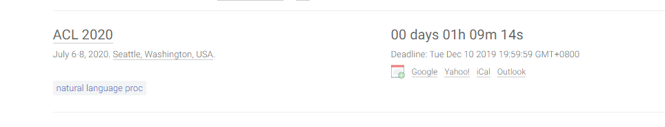
今年有幸和实验室大家一起去了杭州和香港参加了两次会议。
AIS 2019

第一次是5月份去杭州参加的AIS 2019论文分享会。
虽然自己论文没中，但是能见到这么多的大佬还是很开心的。
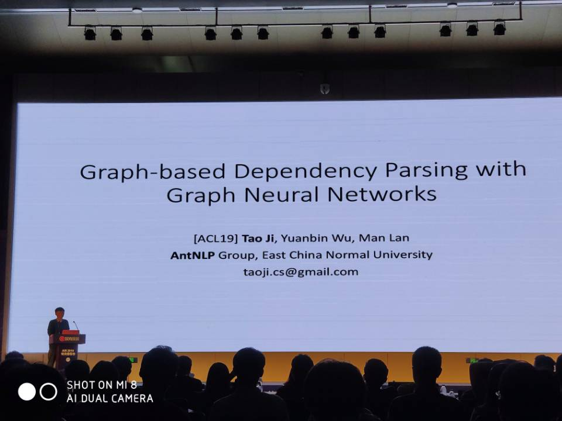
上面这张是牌面带师兄焘博对他的ACL 2019论文做报告。
什么时候站在台上的人能是我呀~~
上面两张是第一天过去时去西湖游玩的时候拍的。
小米8的自动修图是真的🐂🍺，拍出来就是这么美。
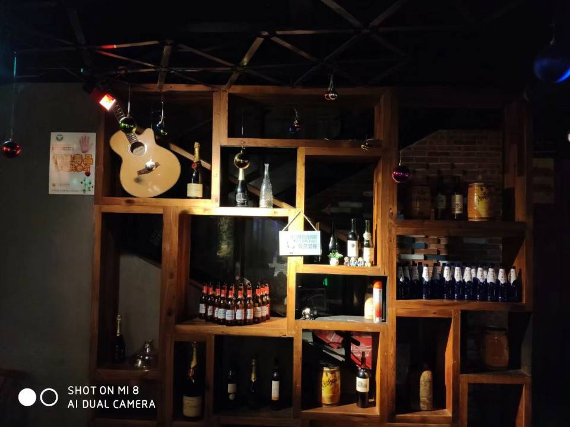
这是最后一天去酒吧喝酒玩剧本杀时候拍的，小哥唱歌不错。
以后能过上这样的生活多好呀，有酒，有歌，有个爱自己的她。
EMNLP 2019
第二次是去香港参加的EMNLP 2019国际会议，主要是沾了ypdu论文的光。
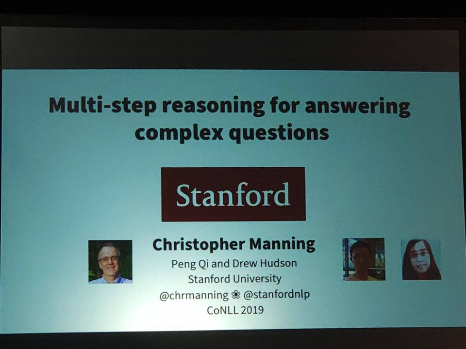
有幸见到了好几位大佬，比如manning、eisner等等。
还看了很多的poster，和大牛们用蹩脚的英文交流了一下。
这是在太平山顶俯瞰香港市中心。
亲眼看到了港片里才能看到的风景，虽然最近很乱，但还是很繁华啊。
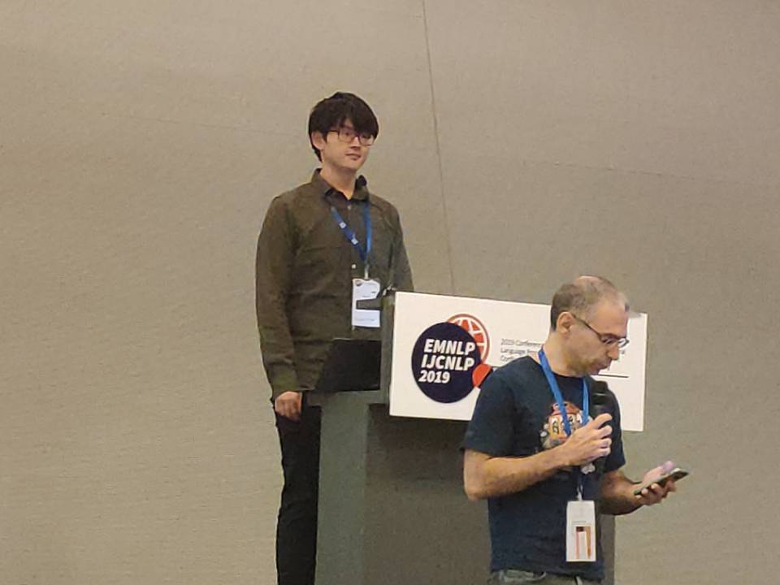
怎么能少了我们的主角呢？还是oral哦。
我也不求oral了，能不能让我做一回主角？
IALP 2019
我们学校今年还组织了一次学术会议，IALP 2019。
我负责网站的维护，当然也去现场听了两天的报告。
虽然没学到啥东西，不过还是面基了一下之前认识的妹子哈哈哈。
虽然妹子都不是单身的QAQ，但还是聊的很开心哈哈（强颜欢笑）。
校园故事
勇哥毕业
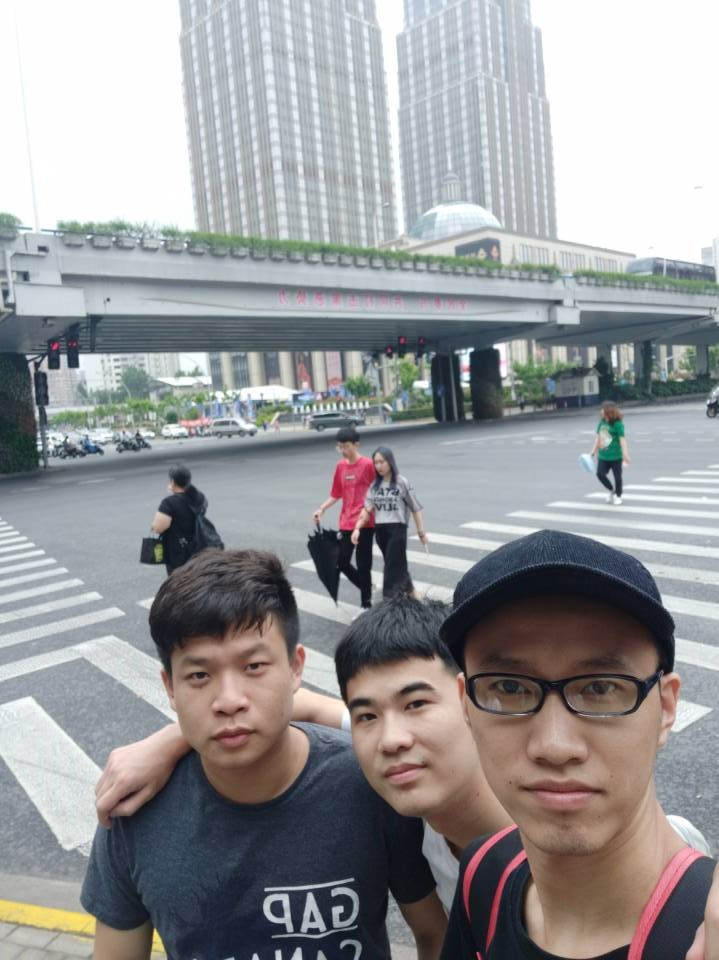
勇哥毕业回他的老家去了，以后吃饭洗澡又少了一个人陪了。
但是召唤师峡谷还是常常能遇见，不知道多少年后还能再聚一回。
带师兄毕业
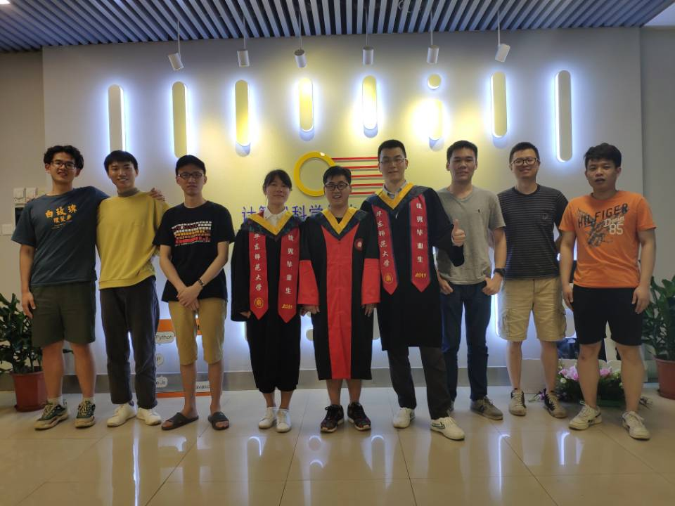
AntNLP最🐂🍺的带师兄czsun也毕业了，这儿的第一位博士。
和他相识也算是很早了，大一就加上好友了，就是没聊过。
虽然他也很憨憨，虽然王者农药是王者还菜的一笔，但不妨碍他的学术🐂🍺。
猫君也走了
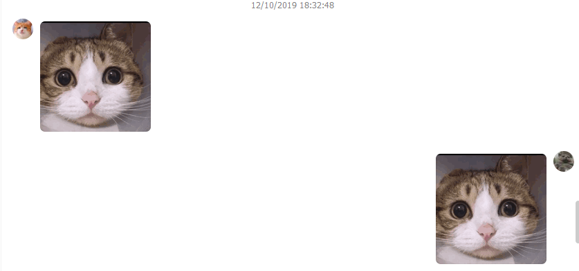
czsun曾经的室友，大学第一个认识的研究生，和我一样也是水群达人。
我们有着共同的特点，我们都很强。
现在去了广州，一线城市里幸福感最高的城市，想想毕业后我要是能去也不错。
要是我中了论文，还得请他一顿烧烤，但愿能够兑现。
温柔的男人像火苗
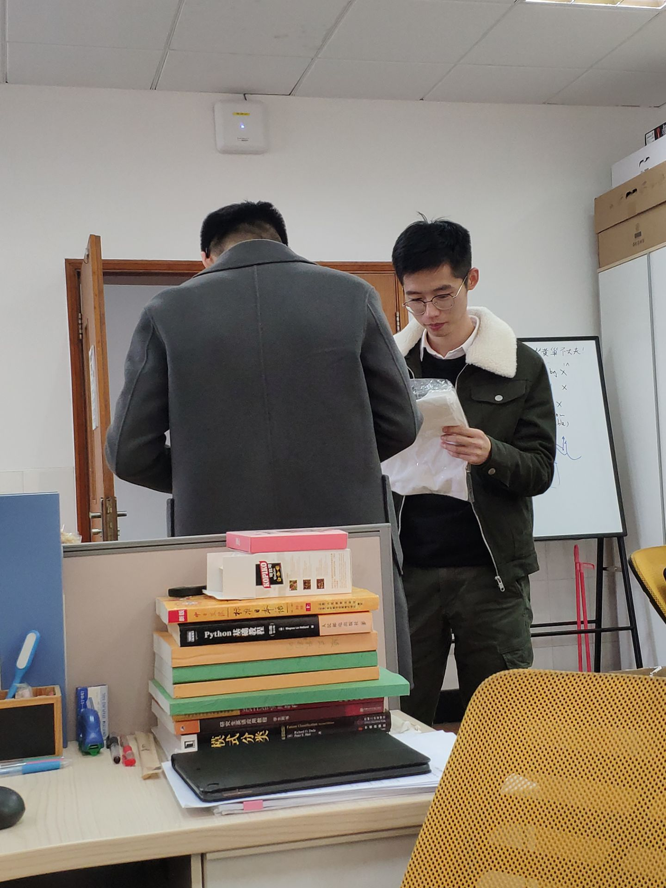
就让我来守护上面这个笑容⑧。
他有很多一起放鞭炮的炮友，还有一堆一起跑步的跑友。
他喜欢游走于各个实验室之间，虽然他亚索从来不游走，对线炸穿。
对了，有喜欢的妹子可以找我要他的vx，他很寂寞。
兄弟团聚
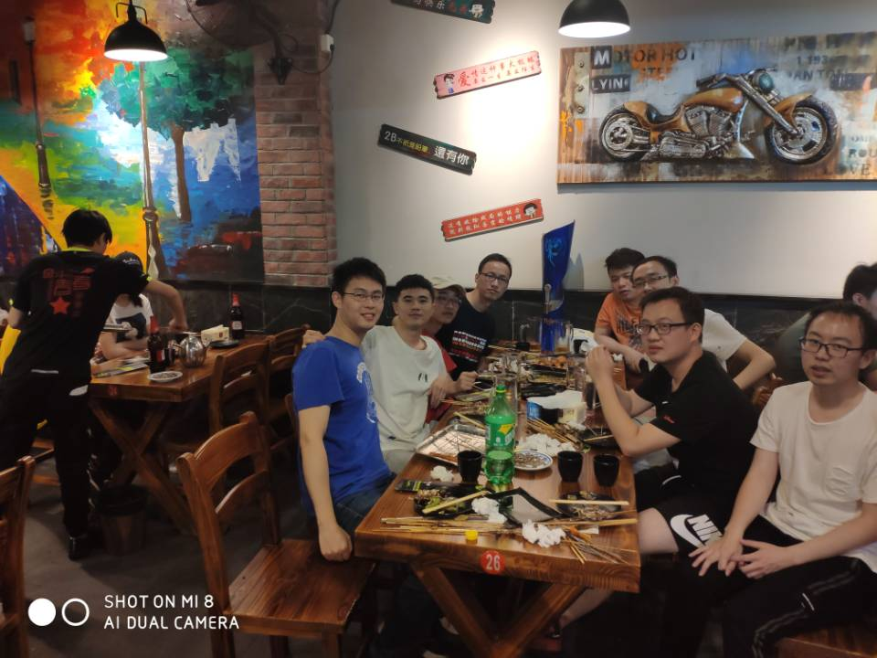
曾经一起打游戏的兄弟们也都去工作了，都在996为了生活卖命。
虽然在一个城市，也很少有机会团聚了。
依然记得上次去找钺哥小杰请我吃的饭，等工作了再约一波。
14届入学5周年
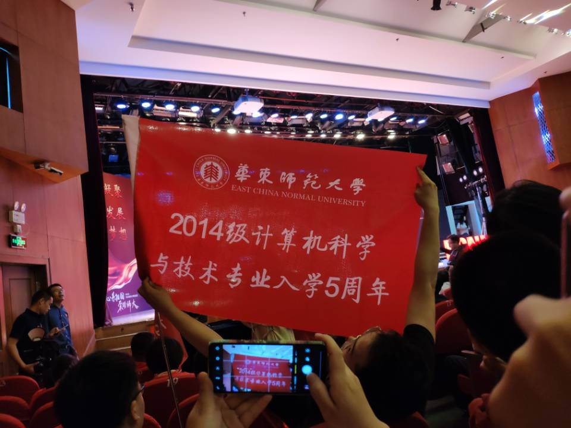
不知道入学五周年有什么好纪念的哈哈，莫名的喜感。
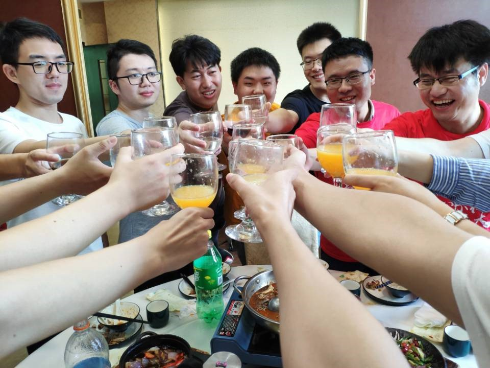
虽然很多人都不是特别的熟悉，但还是回到了几年前的感觉。
不过还是缺了几位曾经洗澡的兄弟（昶臻），爷孙没能团聚还是遗憾。
回闵行
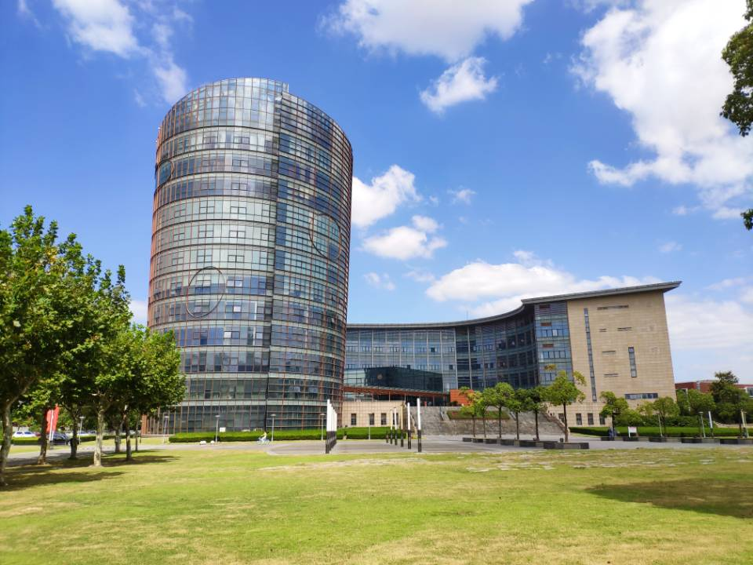
因为办在读证明又回了一次闵行，又是一年半没回去过了，还是熟悉的回忆。
闵行还是那么的幽静，周围更加的繁华了，只是当时的人已经不在了。
游戏人生
小改改
因为搭建博客相识，因为爱打英雄联盟有了共同语言。
上面是小改改送的手办，非常的感动，甚至有点慌，有机会一定要见一见哈哈。
小改改技术还是非常棒的，就是太贪玩了啊。
希望你工作顺利，考研顺利，能找到一个爱自己的npy嘿嘿。
安利一下小改改的博客https://milyyy.github.io/，她是做前端的，很厉害哟。
菜的离谱
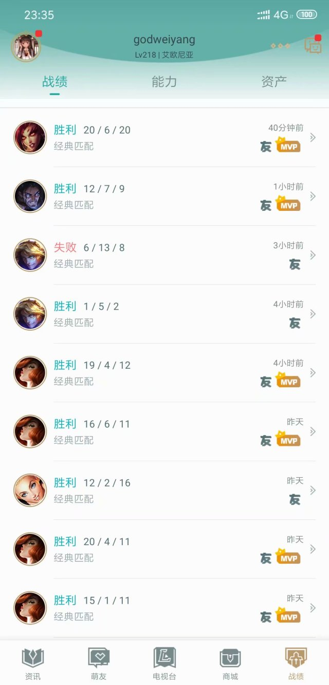
这一年技术也没有突飞猛进，顺手的时候战绩就像上面这样，逆风的时候，菜的就像czsun一样。
因为写论文也好久没玩了，列表里很多人也不上线了，有的工作了，有的弃坑了，大家都忙了。
情感八卦
这一年，无心妹子，所以我没有八卦，让大家失望了。
在发出论文前，应该不会再找了，当然如果有合适的，还是会顺其自然的。
不过作为一个八卦收割机，我还是知道别人的很多八卦的。
不知道为什么，自己置身于感情之中，我就是一个失败者。
但是作为旁观者，我却能捕捉到许多别人观察不到的细节，道理更是一堆一堆的。
杭州AIS那会儿，我就观察到了一些细节，回来后再几件事情结合验证，果然成了。
香港EMNLP那会儿，还没发现什么，回来后通过各类细节大胆猜想，最后也得到了验证。
刚开始说给酸菜鱼我的猜想时，他说我在说胡话，不可能的事，是我真的猜错了吗？
后来的一件件事说明了我是对的，大家更是搬出了一件件证据印证我的猜想。
这也说明了一个科学实验的方法：大胆猜想，小心求证。
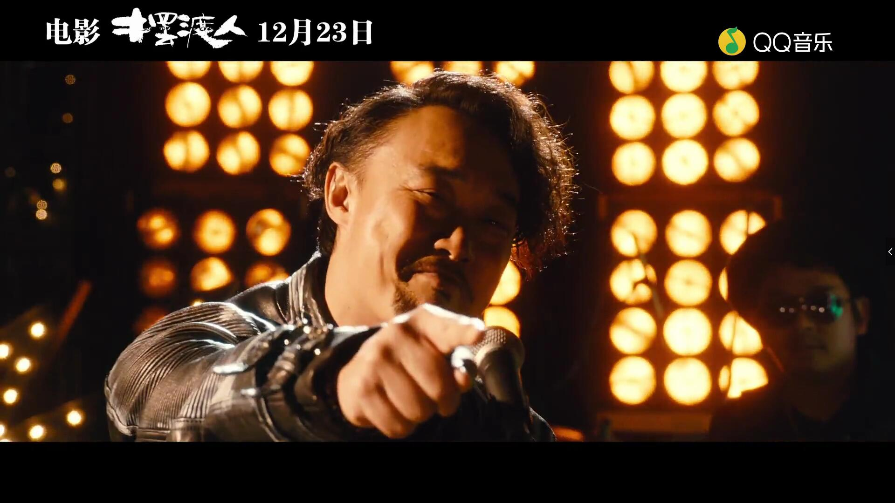
希望有一天，我能够不再旁观别人的故事，创造自己的故事。
希望到时候，我不会因为置身事中而做出变形的操作。
《摆渡人》里面说过，时间一直走，没有尽头，只有路口。
希望下一个她，能陪我走到时间的尽头，能让我为之拼命。
日后尽量别教今天的泪白流
留低击伤你的石头
从错误里吸收
也许丰收月份尚未到你也得接受
或者要到你将爱酿成醇酒
时机先至熟透


![论文赏析[EMNLP19]Designing and Interpreting Probes with Control Tasks](/medias/featureimages/1.jpg)